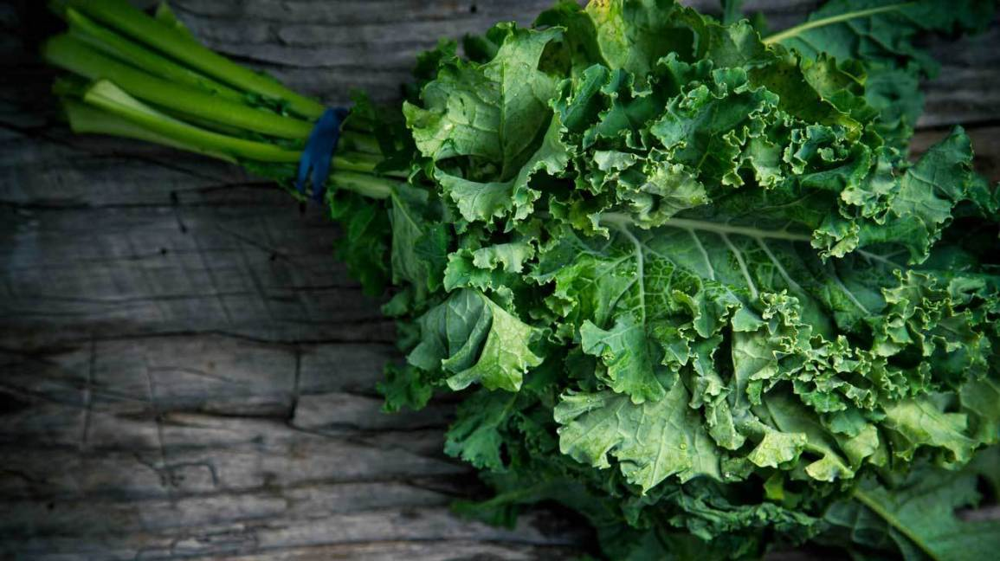
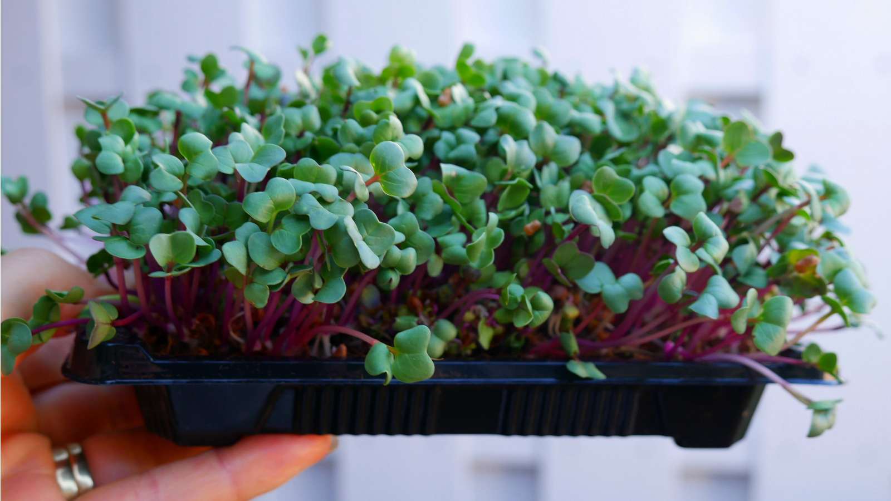
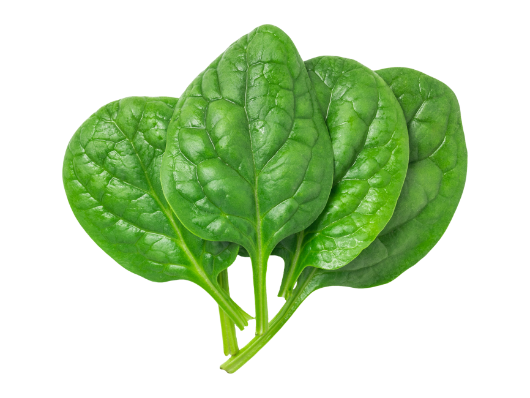
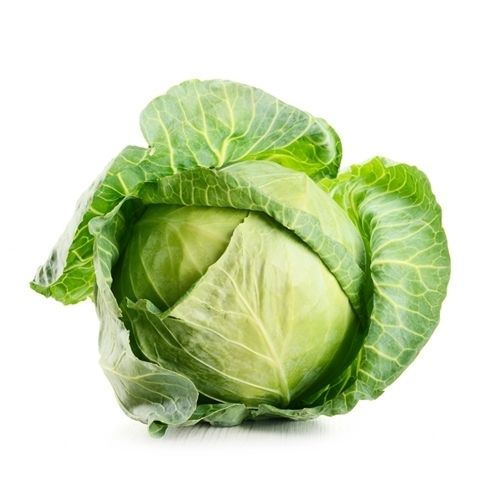
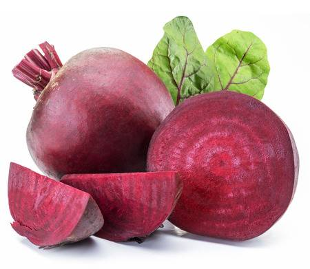
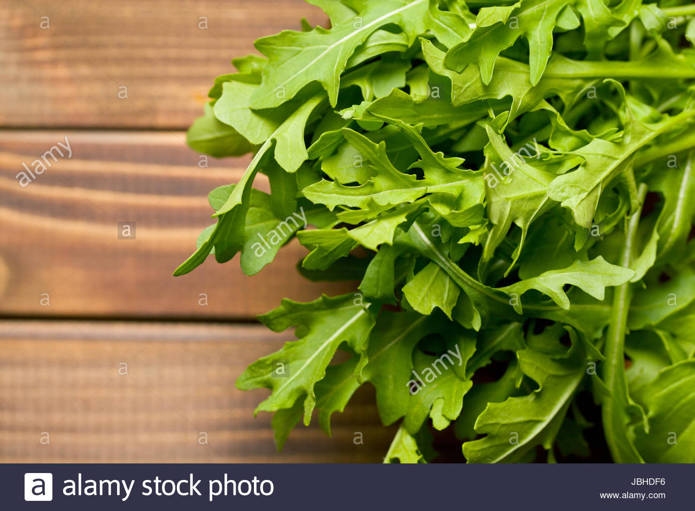
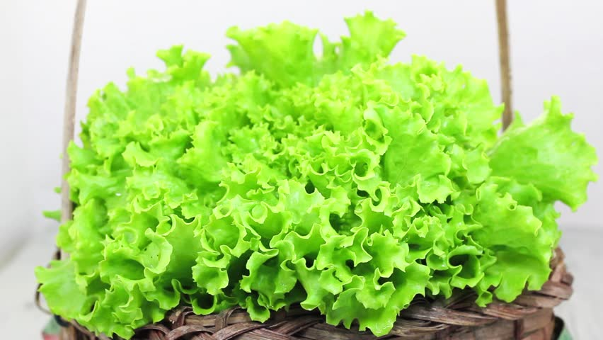
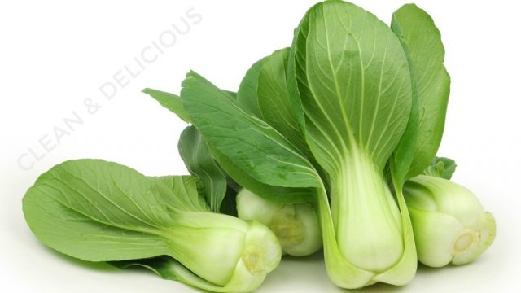
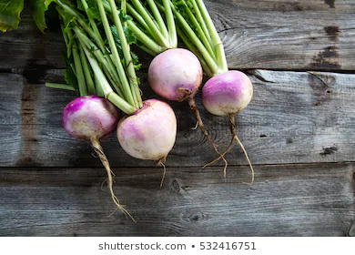

| 1 |
Kale |
Vitamin A ,Cand K |
- Kale Can Help Lower Cholesterol, Which May Reduce The Risk of Heart Disease
- Kale Is Very High in Beta-Carotene
- Kale Is One of The World's Best Sources of Vitamin K
|
 |
| 2 |
Microgreen |
Vitamin C, E and K |
- They help reduce your risk of heart disease
- They might help fight cancer
- They help boost your immune system
- They help improve eyesight
- They reduce constipation
|
 |
| 3 |
Collard Greens |
Vitamin K |
- Collard greens are superb for improving bone health
- individuals with type 2 diabetes
- Collard greens can help improve digestion
- promote healthy looking skin and hair
- improve immune response
|
 |
| 4 |
Spinach |
Vitamin A and K |
- Strengthens your bones
- Strengthens your eyesight and immune system
- Repels bacteria and viruses
|
 |
| 5 |
Cabbage |
Vitamin C |
- Anticancer Properties
- Supports the Digestive Tract
- Improves Heart Health
- Protects from Radiation Therapy
- Improves Brain Health
|
 |
| 6 |
Beet Greens |
Vitamin A and K |
- Many Nutrients in Few Calories
- Help Keep Blood Pressure in Check
- May Help Fight Inflammation
|
 |
| 7 |
Watercress |
Vitamin K |
- Beneficial for Heart Health in Many Impressive Ways
- Mineral and Vitamin K Contents Protect Against Osteoporosis
- Boosts Immune Function Thanks to High Vitamin C Levels
|
|
| 8 |
Romaine Lettuce |
Vitamin A and K |
- Protects Bones
- Prevents Signs of Aging
- Fights Cancer
- Promotes Weight Loss
|
 |
| 9 |
Swiss Chard |
Vitamin A ,C and K |
- Diabetes Control
- Bone Health
- Blood Circulation
|
 |
| 10 |
Arugula |
Vitamin A ,B9 and K |
- Cancer Fighting Powerfood
- Rich in Chlorophyll
- Good for Bone Health
|
 |
| 11 |
Endive |
vitamins A and K |
- Endive is a Low Caloric Food that Helps with Weight Loss
- Endive Helps Regulate Blood Sugar Levels and Prevent Diabetes
- Endive Ensures Good Bowel Movements
- Endive Helps Promote A Healthy Pregnancy
- You Should be Using Endive as Skincare
|
 |
| 12 |
Bok Choy |
Vitamin E |
- Improves Bone Strength
- Boosts Circulation
- Helps to Heal Faster
- Prevents Chronic Disease
- eye care
|
 |
| 13 |
Turnip Greens |
Vitamin A,K and C |
- Cancer prevention
- eye health
- Bone health
|
 |